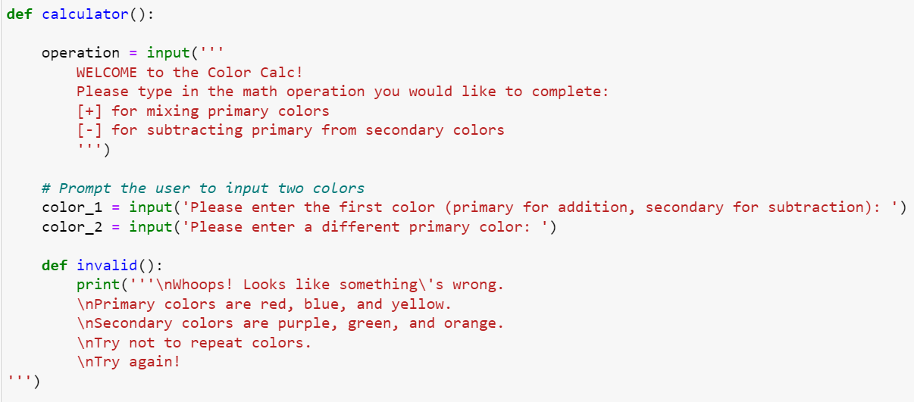
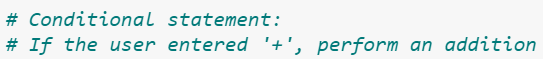
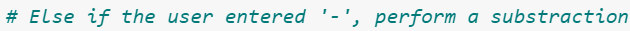
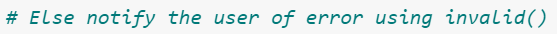

Color Calculator
A brief exploration of how to code an unconventional calculator in python
Project Details
This was an early python project of mine that I enjoyed. I was tasked with creating a
"creative calculator" and decided, as an artist, to encode primary and secondary colors into these sets of
possible equations. The gif above shows this completed calculator being run in Jupyter Notebook.
You can find the code for this project on my GitHub HERE.
Image Gallery

A snippet of code from this project highlighting the introductory and error
messages I created for this calculator.

First, the code is outlined for a color addition process. Color conditionals
are set up for primary colors being added to one another in every combination.

Similarly, the code then checks for a color subtraction task. Color
conditionals are set up for every type of primary color being subtracted from its relative secondary
color.

Finally, there is a section of the code outlining what happens given a user's
input error.